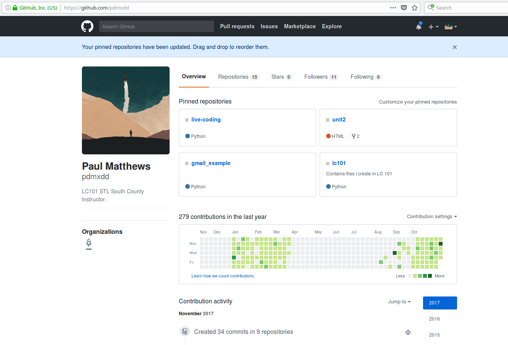

Github Profile
GitHub Profile
Your GitHub profile can be an immensely powerful tool in showing other people projects you have completed, how often you work on projects, how long you've been a programmer, and the different languages and technologies you have worked with. Also, the more you use GitHub, the more comfortable you will be with using any form of Version Control.
After signing into your GitHub profile, you can click on the picture. This will take you to your account settings and will allow you to update your profile settings. You can upload a picture, change your bio, display an email address, and more!
GitHub Username
Your GitHub username should be professional, much like your professional email it should be some variation of your name. You should avoid twitter handles, gamertags, or anything that is not a variation of your name.
a.lovelace is a great GitHub profile name for Ada Lovelace!
countessofcomputers is a poor GitHub profile name for Ada Lovelace -- although she has a steeped background with computers, she should still choose a professional github profile name.
You should also include your professional email address with this GitHub profile.
GitHub Profile Picture
First impressions are very important. You should include a nice looking shot of your face for your GitHub profile.
This would be a great GitHub profile picture for Alan Turing:

Take note that your GitHub profile is public facing! If you do not wish to upload a picture of yourself to GitHub you can still pass the assignment. Notify your mentor if you are not comfortable uploading a picture of yourself to your GitHub profile.
GitHub Profile Bio
You should include a bio for your GitHub profile. It should quickly state who you are and what you are looking for.
A great GitHub bio might look like this:
Bio:
I recently completed LC101 and am currently learning more about Java, Spring, and Hibernate. I am actively looking for development positions.Pinned Repositories
An awesome feature of GitHub is that it allows you to pin repositories! If you have linked a repo to your resume or simply want to highlight a repository, you can mark the repository as a pinned repository and it will be highlighted to anyone that visits your GitHub profile.
Below you will find an image of my personal GitHub account that has 4 pinned repositories. A repository of the live-coding problems we worked on in our last class, a repo for LC101 examples I created while teaching that class, a repo for Unit 2 of LC101 which contains all the presentations I gave throughout the class, and finally a repo called gmail_example which is a small Flask project I created to show how to connect to Gmail's API and to send emails from a web app!
Anyone that comes to my main profile page will find these 4 repositories before anything else!
Project Readme
The final aspect that makes for a great GitHub profile is a specific project readme file.
A readme file is a markdown file that is displayed at the bottom of the repository. This is where you can include the requirements of your project, if someone wants to clone and run your project, and a brief description of what your project does. As you are searching for jobs, you should have a project readme file for every project you want to share with a potential employer.
The readme gives me an ability to explain to the interviewer what my project does, what skills I used in my project, and what I am going to do with this project in the future.
You can add in a requirements section that shows what dependencies and environment they will need to use to run the project.
You can also include images in your markdown file that may include screenshots of wireframes, actual views, or model diagrams of your project. That way, you can show more than the actual project itself.
GitHub is public
As a final reminder your GitHub profile is public. Anyone can search for it, and view any of the information on your profile. If you have any issues with uploading personal information to your GitHub profile please talk with your Mentor about acceptable usernames, pictures, and bios. You will still be required to use GitHub, but we do not want you sharing any information you are not comfortable with sharing.